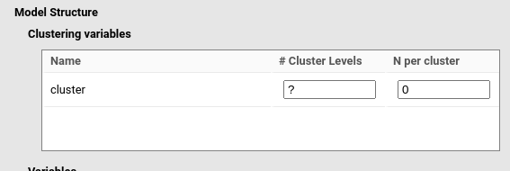
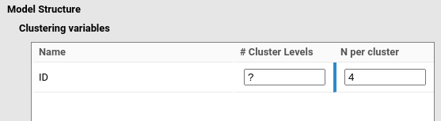
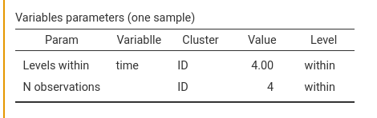
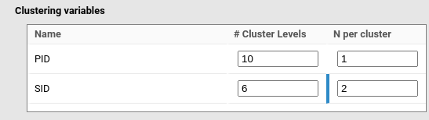
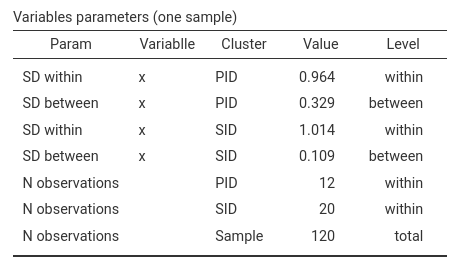
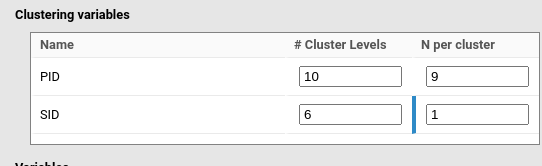
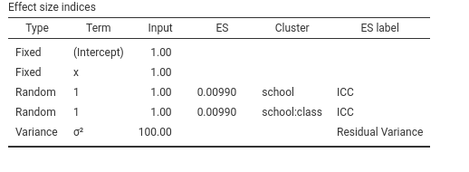

Mixed models: handling clusters
keywords power analysis, mixed models, multiple clusters, participant by stimuli
0.8.2
Here we discuss some rules for handling clustering variables (grouping variables) in different designs.
One clustering variable
Simple designs with one clustering variable are defined by specifying in Model Syntax the “bars” component of the formula, such as:
y~1*1+1*x+(1*1|cluster)Note
Hereinafter the coefficients are immaterial for our discussion, so we
always set them to 1 and assume random intercepts only. The sample
structure is not altered by the coefficient values or the definition of
fixed and random effects. We also fill in all the cluster size fields:
# Cluster Levels and N per cluster. It is
clear that, depending on the aim of the analysis, one of these
parameters will be determined by the algorithm.
PAMLj reads cluster as
the name of the clustering variable and displays the fields to be filled
in to generate the correct sample based on the cluster variable
definition.

Now, depending on the aim of the analysis, one needs to fill one of
the fields (# Cluster Levels or
N per cluster). Here we discuss the meaning of these
fields, knowing that depending on the goal of the analysis, one of them
will be the target of the power function.
With one clustering variable, # Cluster levels is the
number of groups clustering the observations. In a multilevel design,
say with pupils clustered within classes, # Cluster levels
is the number of classes in the sample (or the number to be established
by the power analysis). In a repeated-measures design with conditions
repeated within participants, # Cluster levels is the
number of participants.
N per cluster is the number of observations within each
cluster level (group). In a multilevel design with pupils clustered
within classes, N per cluster is the (average) number of
pupils in the sample (or the number to be established by the power
analysis). In a repeated-measures design with a condition repeated
within participants, N per cluster is the number of
measurements taken for each participant.
With one clustering variable, N per cluster should be at
least 2, because without at least two measurements per cluster, not even
a random intercept can be estimated. To estimate random slopes,
N per cluster must be larger than 2; otherwise the model
will not have sufficient degrees of freedom to estimate the variance of
the coefficients.
One-way repeated-measures ANOVA design
Assume we have a repeated-measures design with four time points (see an example in Mixed vs RM-ANOVA), and one measurement per participant (identified by the variable ID) at each time point. To define this design, we would input:
y~1*1+[1,1,1]*time+(1*1|ID)Then we specify that time is a categorical variable with
4 levels.

and we set the cluster N per cluster to 4, indicating
that one participant (the cluster unit) has 4 observations.

The resulting data look like this:
y time ID
1 0.64342217 1 1
2 0.15874249 2 1
3 -0.70961322 3 1
4 -1.46269242 4 1
5 -0.80773575 1 2
6 0.38518147 2 2
7 -1.95162686 3 2
8 2.98249154 4 2
9 -0.04821753 1 3
10 -1.61386528 2 3
11 -0.68877198 3 3
12 1.33885528 4 3We can see that time is repeated within ID, with one measurement for
each level of time. Table Variable parameters (one sample)
also shows that we are simulating the correct design.

At the bottom is clearly stated that PID clusters have 4
observations each.
Note
To see an example of the data generated by your model in PAMLj, simply select the option Data structure in | Options panel. Variables structure produces a table with information about the variables and their levels.
Assume now we have a similar design, but within each time condition the participant is measured 5 times (5 trials). We still have the same model:
y~1*1+1*time+(1*1|ID)and the same variable definition (time with 4 levels), but now
N per cluster is 20, which is 4 levels of time × 5
trials.

The resulting data look like this (first participant):
y time ID
1 0.38563267 1 1
2 1.24833377 1 1
3 -0.76549380 1 1
4 -0.94633446 1 1
5 0.72747486 1 1
6 -0.58658441 2 1
7 -1.01631241 2 1
8 -2.66731584 2 1
9 0.62401507 2 1
10 0.15654240 2 1
11 -0.26135861 3 1
12 0.11923442 3 1
13 0.66327673 3 1
14 -0.63811091 3 1
15 0.31462810 3 1
16 0.27796168 4 1
17 0.32836307 4 1
18 -0.34867872 4 1
19 -0.20470434 4 1
20 -0.71480958 4 1Note
Notice that categorical variables are built to vary within clusters by default. This behavior is chosen because in power analysis for mixed model within-cluster variables are more common. However, PAMLj allows to specify between-clusters categorical variables (and also continuous variables). Please read Mixed models: Building factorial designs for help on that.
Multi-cluster designs
Here we discuss cases with more than one clustering variable. When more than one cluster variable is involved, things gets a bit complex (a dare I say ugly), but still those designs are doable in PAMLj. One needs a bit more patience.
Two cases are most relevant for researchers: cross-classified clustering and nested clustering.
Cross-classified clusters
A typical example of cross-classified clustering is an experimental design in which \(P\) participants (identified by the variable PID) are tested with \(S\) stimuli (variable SID). Every participant is exposed to each stimulus, and each stimulus is seen by all participants. We start with the simpler example in which there is only one measurement for each combination of participant and stimulus (a participant sees a stimulus only once).
The mixed model is:
y~1*1+1*x+(1*1|PID)+(1*1|SID)Let’s say we want a sample of 10 participants and 5 stimuli. In total
we have 50 observations, in which each participant has
N per cluster equal to 1, and each stimulus has
N per cluster equal to 1 as well. It may seem
counterintuitive, but the participant is actually repeated only once,
but their measurement is spread across 5 stimuli. Thus, we need to
set:

The resulting data (first participant) will look like this:
y PID SID
1 0.741008569 1 1
2 -1.001295926 1 2
3 0.728456584 1 3
4 0.649785351 1 4
5 -1.373459856 1 5
6 -2.073459856 1 6Now, what about a categorical variable (i.e., an experimental factor
named cond)? If the variable is between-subjects, we
simply declare it with the syntax keyword bet: cond|PID
(see Mixed models: model syntax). For
a 4-level cond, we have (first two participants):
Row x PID SID
1.00 b 1 1
2.00 b 1 2
3.00 b 1 3
4.00 b 1 4
5.00 b 1 5
6.00 b 1 6
7.00 b 2 1
8.00 b 2 2
9.00 b 2 3
10.00 b 2 4
11.00 b 2 5
12.00 b 2 6
13.00 b 3 1
14.00 b 3 2
15.00 b 3 3
16.00 b 3 4
17.00 b 3 5
18.00 b 3 6
19.00 a 4 1
20.00 a 4 2
21.00 a 4 3
22.00 a 4 4
23.00 a 4 5
24.00 a 4 6
25.00 a 5 1
26.00 a 5 2
27.00 a 5 3
28.00 a 5 4
29.00 a 5 5
30.00 a 5 6
The data structure can be seen also in
Variables parameters table showing that each
PID cluster (participant) has 6 observations and each
stimulus (SID) is seen 10 times, once per participant.

If the variable is within-subjects, we must ensure that the number of observations per participant (here 6) is a multiple of its levels. With 6 observations, cond can have 2 levels, 3 levels, or 6 levels; otherwise it cannot be repeated within participant. A 2-level factor would look like this:
y cond PID SID
1 0.49915152 1 1 1
2 0.74412274 2 1 2
3 -1.13346819 1 1 3
4 0.86378973 2 1 4
5 -0.13518382 1 1 5
6 1.16554628 2 1 6A more complex design arises when the repeated-measures factor
cond is repeated both within participants and within stimuli.
Suppose each participant sees each stimulus in both conditions of factor
cond. This implies that each stimulus has two observations, so
we change its N per cluster:

and we obtain the desired design:
y cond PID SID
1 1.61187894 1 1 1
2 0.41588941 2 1 1
3 -0.88306925 1 1 2
4 -0.42600560 2 1 2
5 -0.71458546 1 1 3
6 -1.00448085 2 1 3
7 -0.98879046 1 1 4
8 0.91321802 2 1 4
9 0.81331414 1 1 5
10 0.54411584 2 1 5
11 -0.15936292 1 1 6
12 -1.03945842 2 1 6This means that each stimulus has \(20\) observation (2 for each of the 10 participants), and each participants has \(12\) observations, 2 per stimulus times 6 stimuli. Indeed, the data are generated accordinglu.

With the same logic, we can simulate designs with several trials within each combination of participant and stimulus. For instance, with the following setup:

each participant sees all stimuli 9 times. Accordingly, each participants has 54 observations (9 trials X 6 stimuli), and each stimulus features 90 observations (9 trials X 10 participants). Indeed:

Nested cluster classification
Let us consider one of the classic multilevel design: pupils within classes within schools. In this design we have two clustering variables: class and school. In multilevel terminology, pupils are level 0, classes are level 1 with pupils nested within classes, and schools are level 2 with classes nested within schools. To be practical, let us assume we want a sample with 10 schools, each with 6 classes, and each class (on average) with 12 pupils.
First, we set the model:
y~1*1+1*x+(1*1|school/class)Then we specify that we have 10 schools, each with 6 classes, and each class has 12 observations (pupils).

The generated data look similar to the cross-classified data:
row y x school class
1 0.456717064 -1.017673137 1 1
2 -1.495551991 0.694440645 1 1
3 -0.480543438 0.194002872 1 1
4 0.293003240 -0.116523555 1 1
5 -1.702547420 -1.203825265 1 1
6 1.014035495 0.461345298 1 1
7 -0.415440850 -0.585482460 1 1
8 -1.524924282 0.544323536 1 1
9 -0.106578314 -0.196693360 1 1
10 -0.035543818 -2.741920747 1 1
11 0.229491601 0.170131727 1 1
12 -1.909614050 -1.159812029 1 1
13 1.190966855 -0.356247480 1 2
14 -2.028748115 0.489991721 1 2
15 -1.079830560 1.315918615 1 2
16 0.099924682 -0.330729467 1 2
17 -0.075449795 -2.424778270 1 2
....However, the estimated model is different. If one looks at the
Effect size indices table, one finds that the clusters are
now school and school:class, which is exactly
how the model specification expands.

In terms of cluster size, we obtain the resultas we intended

Let’s check if the setup is correct: each school has 6 classes with 12 pupils, so within each school there are 72 observations. Within each class nested in school there are 12 pupils. The data are ok.
Note
In mixed models estimated following the R package
lme4 syntax, the expression
(1 | school/class) is just a shorthand for specifying
nested random effects. The operator school/class expands
internally into two terms: one random intercept for the grouping factor
school, and one random intercept for the interaction (i.e.,
nesting) school:class. Formally, the random structure
is:
(1 | school) + (1 | school:class)Accordingly, the Effect size indices table indicates
that the cluster variables are school and
school:class.
The general rule is that, in mixed models, “nesting”
is not a separate statistical concept—it is only a syntactic shortcut.
What matters is the definition of the grouping factors, which in this
example are school and school:class. Random
coefficients (whatever they are) are computed across the groups defined
by these two variables.
Additional material
Examples
Some worked out practical examples can be found here
Comments?
Got comments, issues or spotted a bug? Please open an issue on PAMLj at github or send me an email